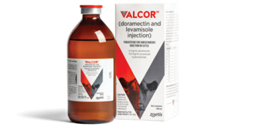
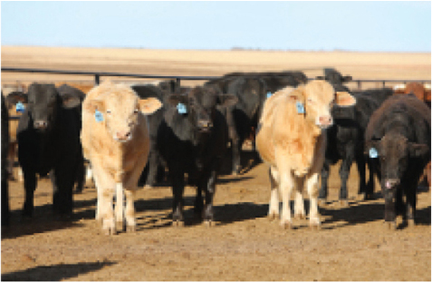

Zoetis introduces the first and only combination endectocide for cattle

In August, Zoetis released Valcor™ (doramectin and levamisole injection), the first
and only combination endetocide in the United States designed for use against
internal and external parasites in cattle. This prescription injectable product has
the strength of two active ingredients to treat and control adult stage and L4
stage of Haemonchus placei, Cooperia spp. and Ostertagia ostertagi (including
inhibited L4), as well as the adult stage of Nematodirus helvetianus. It is also
indicated for the treatment and control of lungworms, eyeworms, grubs, mange
mites and sucking lice. Contact your Zoetis representative for more information.
Considerations for chlortetracycline during fall calf run

With the influx of cattle entering the feedlot in fall and winter, resources are
stretched. It has never been more important to help keep cattle healthy in the
face of bovine respiratory disease challenges. This information sheet in the link
below contains a comparison of label indications for Aureomycin® and PennChlor®
that could be helpful as you work with clients to evaluate chlortetracycline
options for rations.
Stay updated with growth implant changes
With the influx of cattle entering the feedlot in fall and winter, resources are
stretched. It has never been more important to help keep cattle healthy in the
face of bovine respiratory disease challenges. This information sheet in the link
below contains a comparison of label indications for Aureomycin® and PennChlor®
that could be helpful as you work with clients to evaluate chlortetracycline
options for rations.
Visit ZoetisUS.com
or contact your Zoetis representative to learn more.
Stay Connected!
Where to Buy | Contact Us | Zoetis Learning Solutions
IMPORTANT SAFETY INFORMATION: Do not treat catlle with Valcor within
15 days of slaughter. Not for use in female dairy cattle 20 months of age
or older, including dry dairy cows; not for use in beef calves less than 2
months of age, dairy calves, and veal calves. Safety has not been evaluated
in breeding bulls. Use with caution in cattle treated with cholinesterase
inhibitors. This product is likely to cause injection site swelling; tissue damage
(including granulomas and necrosis) may occur. These reactions have
resolved without treatment. See full prescribing information here.
Do not use Aureomycin in calves to be processed for veal.
Caution: Federal law restricts medicated feed containing this veterinary feed
directive (VFD) drug (Aureomycin or PennChlor) to use by or on the order of
a licensed veterinarian.